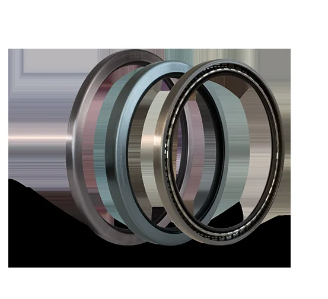

单元化迷宫设计 · 保护关键旋转设备

KLOZURE® 是 Garlock 的动密封旗舰系列，包括轴承隔离器与油封两大产品线。轴承隔离器采用非接触式单元化迷宫设计，在保护轴承免受水、粉尘、化学品等污染物侵入的同时，有效防止润滑剂泄漏，相比传统唇形油封使用寿命更长、维护更少，是泵、电机、齿轮箱等旋转设备的理想轴承保护方案。
Garlock Klozure® 油封产品在冶金、矿山、电力和造纸等行业的重型设备上有广泛应用，通称为重载油封。这一系列油封的弹性体都采用 MILL-RIGHT® 系列原材料，极大地改善了橡胶材料的耐磨性和耐腐蚀能力。Klozure® 轴承隔离器采用组合迷宫设计以防止污染物进入和避免润滑介质的泄漏，最常用于泵、电机和齿轮箱，可提供整体式和剖分式两种设计；另有 FLOOD-GARD™ 一款应用于全浸没工况的轴承隔离器。
上海物泽实业作为 Garlock 官方授权中国经销商，现货供应 KLOZURE® 轴承隔离器与油封系列，提供轴径测绘与选型服务，支持化工、电力、食品等行业的快速交付。| 参数项 | KLOZURE® 轴承隔离器 | KLOZURE® 油封系列 |
|---|---|---|
| 轴径范围 | 20mm ~ 300mm | 按设备型号定制 |
| 温度范围 | -40°C ~ 260°C | 取决于唇材料 |
| 密封原理 | 非接触迷宫 | 弹性唇口接触 |
| 安装方式 | 整体式/分体式 | 标准压入式 |
| 适用行业 | 化工、电力、矿山 | 通用旋转设备 |
以下为 Garlock 官方 KLOZURE® 产品资料（PDF），涵盖轴承隔离器与油封系列。
产品技术描述参考 Garlock（卡勒克密封）官方公开资料整理；GYLON®、GRAPH-LOCK®、BLUE-GARD®、KLOZURE®、ONE-UP®、LINK-SEAL® 等商标归 Garlock 及其关联公司所有，本司为授权经销商。技术参数与选型信息以 Garlock 原厂 PDF 数据表为准，正式选型请咨询专业工程师。